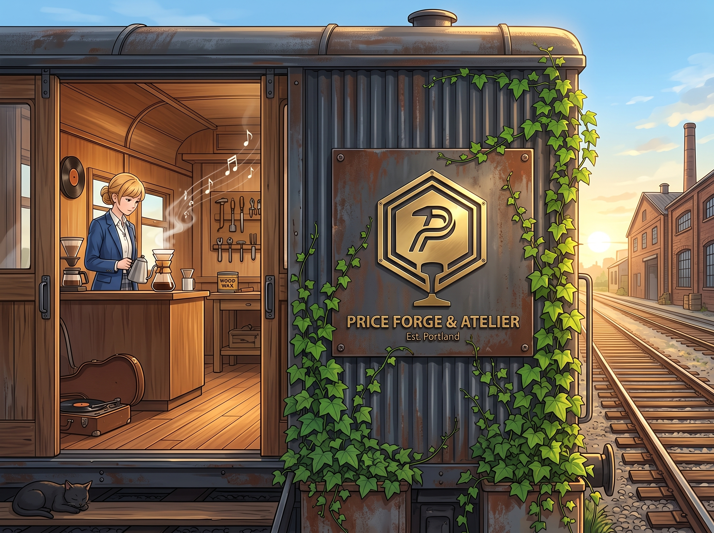
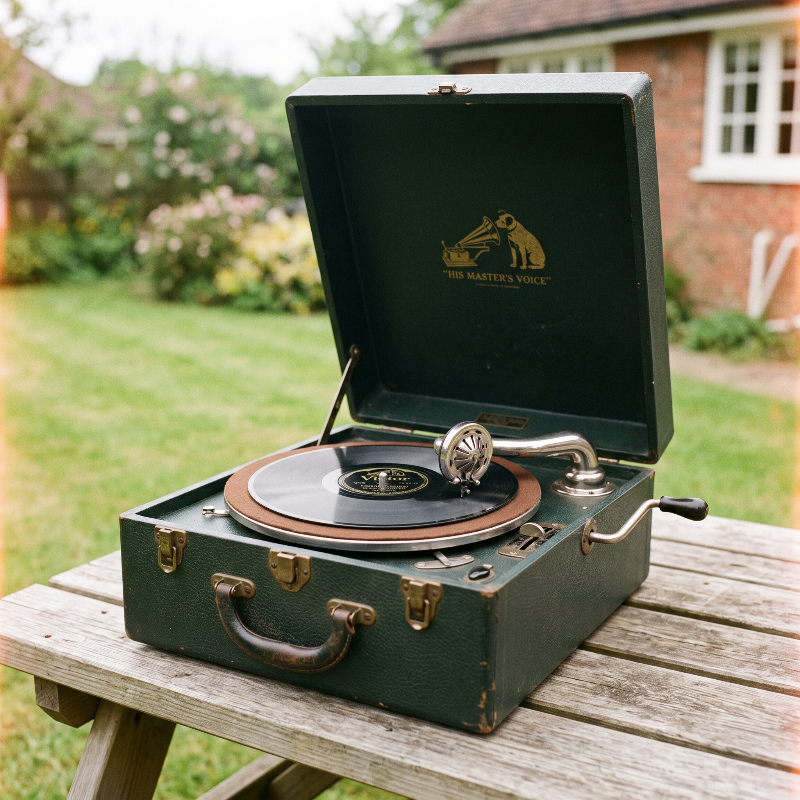

001號委託


初夏轉為盛夏的週六上午，波特蘭東區的舊鐵道旁泛著金色的暖陽。
火車車廂外壁那塊耐候鋼黃銅招牌兩側，Kate 栽下的波士頓常春藤已經生機勃勃地舒展開翠綠的葉片，細嫩的卷鬚正沿著金屬邊緣向上攀爬。車廂推拉門大敞著，屋內流淌著輕柔的爵士吉他樂，夾雜著手沖咖啡與木蠟油的清香。
就在四人各自在工坊忙碌時，門外的碎石路傳來了遲疑的腳步聲。
一位穿著泛白燈芯絨外套、戴著報童帽的老先生出現在門口。他懷裡極其小心地抱著一個沉甸甸的深胡桃木手提箱，有些侷促地抬頭看了看門口那塊散發著冷金光澤的「PRICE FORGE & ATELIER」招牌，又看了看門內。
「打擾了……請問這裡能修理老物件嗎？」老先生輕聲問道，聲音帶著一絲沙啞。
「當然！歡迎光臨全波特蘭最硬核的手作工坊！」Chloe 一把放下手裡的銼刀，從那張巨型橡木工作台後站起身，大步迎了上去。
Kate 立刻笑著端來一杯冰鎮薄荷茶，溫柔地引導老先生在長皮沙發上坐下。
老先生有些緊張地解開箱子的黃銅暗扣，掀開厚重的防塵絨布——
裡面赫然是一台 1930 年代勝利牌經典款便攜式發條留聲機。箱體採用了名貴的桃花心木，但側面的發條搖把早已卡死，黑膠唱盤下方的鑄鐵齒輪箱嚴重咬合，而那隻標誌性的鍍鉻大喇叭發音臂也因為年代久遠而鬆動變形。
「這是我太太年輕時最珍貴的嫁妝，」老先生撫摸著斑駁的木殼，眼神裡滿是眷戀，「下週是我們結婚五十週年金婚紀念日……城裡的幾家現代音響店都說零件停產修不了，建議我當廢鐵扔掉。我在舊報紙上看到你們工坊的報導，想來碰碰最後的運氣。」
「廢鐵？」Chloe 挑起眉毛，眼神瞬間燃起了一股不服輸的光芒，「在老娘的工坊裡，只要有齒輪和金屬，就沒有修不好的東西。」
四個人立刻圍繞這台老古董展開了工坊成立以來的第一場全流程修復作戰。
一、機械解構與精密齒輪重製
Chloe 將發音機芯移到工作台中央的鑄鋼虎鉗旁，用那套瑞士黑檀木精密螺絲刀拆解開生鏽的齒輪箱。
「發條鋼帶沒有斷，只是潤滑脂乾涸硬化導致主軸咬死；但二級減速齒輪崩了三個齒。」Chloe 拿著游標卡尺測量模數，俐落地在車床上夾起一小塊黃銅棒料，親手切削、銑齒，重新復刻了一枚分毫不差的全新黃銅傳動齒輪。
當她重新上緊發條，手動釋放制動閘時，齒輪箱發出了宛如瑞士機械錶般清脆、綿密而順暢的「滋——滋——」運轉聲。
二、音臂共鳴膜微米級校準
Victoria 戴著絲質手套，拿起高倍放大鏡檢查發音頭。原本的雲母共鳴薄膜已經老化碎裂。
「別用劣質塑料膜糊弄，」Victoria 優雅地從自己的工具包裡取出一片專門修復古董樂器的天然超薄雲母片，用微型圓規刀精準裁切，並用天然蟲膠重新密封邊緣，「共鳴腔的氣密性必須達到 100%，否則高頻人聲會產生金屬破音。」
三、桃花心木箱體深層滋養
Kate 拿著自製的草本蜂蠟軟膏與細羊毛氈，小心翼翼地一點點擦拭著褪色乾裂的木箱外殼。
木材吸收了天然油脂，重新泛起溫潤深邃的紅褐色微光，歲月留下的劃痕在她的打磨下不再顯得破舊，反而沉澱出一種時光淬煉後的典雅質感。
四、影像見證與首份委託記錄
Max 穿梭在工作台周圍，用機械相機記錄下齒輪咬合的火星、雲母片上的微光與老先生眼中漸漸亮起的期待。
隨後，她引導老先生在 Victoria 親手定製的那本復古皮革訪客登記簿的第一頁，端端正正寫下了這間工坊的「001 號委託」。
午後一點，陽光灑滿車廂。
全部組裝調試完畢的留聲機在工作台上散發著重生的光芒。
老先生顫抖著手，將一張自帶的 78 轉老黑膠唱片《月光小夜曲》放在唱盤上，輕輕搖了幾圈發條，隨後放下唱針。
「沙……沙……」
微弱的唱針滑動聲過後，醇厚、溫暖而極具年代感的管樂與弦樂聲，透過鍍鉻音臂在整節車廂內緩緩流淌開來。
沒有現代音響的數碼冰冷，只有純粹物理震動傳遞出的溫柔共鳴。
老先生愣在原地，聽著那首五十年前與妻子初遇時的旋律，眼眶漸漸濕潤，激動得說不出話來，只是緊緊握住 Chloe 沾滿機油的手，連聲道謝。
當老先生抱著煥然一新的留聲機、帶著滿滿的感動走出車廂門口時，常春藤在微風中輕輕搖曳，招牌上的黃銅大字在盛夏的陽光下熠熠生輝。
Chloe 靠在門框邊，手裡轉著扳手，Max、Kate 和 Victoria 並肩站在身旁，四個人望著老先生遠去的背影相視一笑。
這座由廢棄火車車廂改裝的工坊，在波特蘭東區的舊鐵軌上，真正開啟了它守護時光與記憶的溫暖旅程。